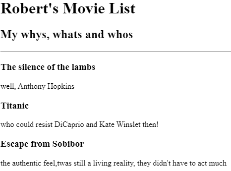
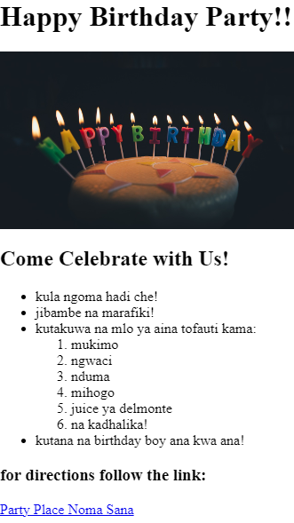
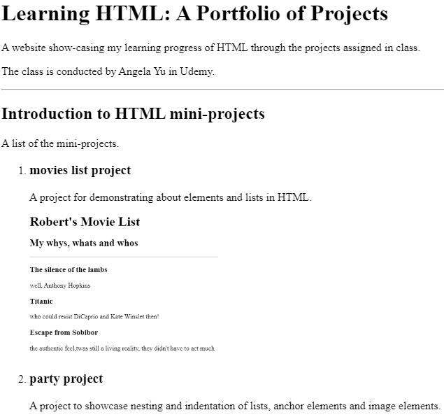

A website show-casing my learning progress of HTML through the projects assigned in class.
The class is conducted by Angela Yu in Udemy.
A list of the mini-projects.
The introductory project for demonstrating about elements and lists in HTML.
A project to showcase nesting and indentation of lists, anchor elements and image elements.
This project aims to apply what has been learned so far including file paths, multi-page websites and the HTML boilerplate.
